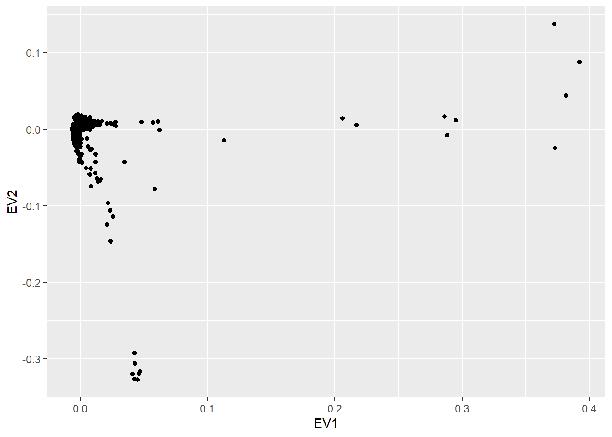

16 Genome-wide association analyses (GWAS)
Genomic data can be stored in different formats. VCF and PLINK files are commonly used in genetic epidemiology studies. We have a GWAS example available at BRGE data repository that aims to find SNPs associated with asthma. We have data stored in VCF (brge.vcf) with several covariates and phenotypes available in the file brge.txt (gender, age, obesity, smoking, country and asthma status). The same data is also available in PLINK format (brge.bed, brge.bim, brge.fam) with covariates in the file brge.phe.
Here we illustrate how to perform GWAS using R and Bioconductor packages or PLINK shell command line.
16.1 GWAS with Bioconductor
We have created a resource having the VCF file of our study on asthma as previously described. The name of the resource is brge_vcf the phenotypes are available in another resource called brge that is a .txt file. The GWAS analysis is then perform as follows
We first start by preparing login data
builder <- newDSLoginBuilder()
builder$append(server = "study1", url = "https://opal-demo.obiba.org",
user = "dsuser", password = "password",
resource = "RSRC.brge_vcf", driver = "OpalDriver")
logindata <- builder$build()
conns <- datashield.login(logins = logindata, assign = TRUE,
symbol = "res")In this case we have to assign to different resources. One for the VCF (obesity_vcf) and another one for the phenotypic data (obesity). To this end, the datashield.assign.resource function is required before assigning any object to the specific resource. Notice that the VCF resource can be load into R as a GDS thanks to our extension of existing resources in the reourcer
datashield.assign.resource(conns, symbol = "vcf.res",
resource = list(study1 = "RSRC.brge_vcf"))
datashield.assign.expr(conns, symbol = "gds",
expr = quote(as.resource.object(vcf.res)))
datashield.assign.resource(conns, symbol = "covars.res",
resource = list(study1 = "RSRC.brge"))
datashield.assign.expr(conns, symbol = "covars",
expr = quote(as.resource.data.frame(covars.res)))These are the objects available in the Opal server
$study1
$study1$environment.searched
[1] "R_GlobalEnv"
$study1$objects.found
[1] "covars" "covars.res" "gds" "res" "vcf.res" We can use dsBaseClient functions to inspect the variables that are in the covars data.frame. The variables are
$study1
[1] "scanID" "gender" "obese" "age" "smoke" "country"
[7] "asthma" The asthma variable has this number of individuals at each level (0: controls, 1: cases)
Data in all studies were valid
Study 1 : No errors reported from this study$output.list
$output.list$TABLE_rvar.by.study_row.props
study
covars$asthma 1
0 1
1 1
$output.list$TABLE_rvar.by.study_col.props
study
covars$asthma 1
0 0.6864187
1 0.3135813
$output.list$TABLE_rvar.by.study_counts
study
covars$asthma 1
0 1587
1 725
$output.list$TABLES.COMBINED_all.sources_proportions
covars$asthma
0 1
0.686 0.314
$output.list$TABLES.COMBINED_all.sources_counts
covars$asthma
0 1
1587 725
$validity.message
[1] "Data in all studies were valid"There may be interest in only studying certain genes, for that matter, the loaded VCF resource can be subsetting as follows
The previous code will over-write the VCF with the SNPs corresponding to the selected genes, if the intention is to perform studies with both the complete VCF and a subsetted one, the argument name can be used to create a new object on the server with the subsetted VCF, preserving the complete one.
Then, an object of class GenotypeData must be created at the server side to perform genetic data analyses. This is a container defined in the GWASTools package for storing genotype and phenotypic data from genetic association studies. By doing that we will also verify whether individuals in the GDS (e.g VCF) and covariates files have the same individuals and are in the same order. This can be performed by
Before performing the association analyses, quality control (QC) can be performed to the loaded data. Three methodologies are available; 1) Principal Component Analysis (PCA) of the genomic data, 2) Hardy-Weinberg Equilibrium (HWE) testing and 3) Allelic frequency estimates. The QC methods 2 and 3 have as inputs a GenotypeData object, created with a covariates file that has a gender column; while method 1 has as input a VCF.
To perform the PCA, a pruning functionality is built inside so that redundant SNPs are discarted (there is an extra argument ld.threshold which controls the pruning, more information about it at the SNPRelate documentation), speeding up the execution time

To perform QC methodologies 2 and 3, the name of the gender column as well as the keys to describe male or female have to be provided. Remember that we can visualize the names of the variables from our data by executing ds.colnames("covars"). In our case, this variable is called “gender”, and the levels of this variable are 1 for male and 2 for female as we can see here (NOTE: we cannot use ds.levels since gender variable is not a factor):
covars$gender
1 1215
2 1097
Total 2312The HWE test can be performed to selected chromosomes using the argument chromosomes, only the autosomes can be selected when performing a HWE test, the encoding of the autosomes can be fetched with
NULLTherefore, HWE can be performed by:
$study1
# A tibble: 1,581 x 9
snpID chr nAA nAB nBB MAF minor.allele f pval
<int> <chr> <chr> <chr> <chr> <chr> <chr> <chr> <chr>
1 95140 22 531 1082 640 0.47581~ A 0.03724~ 0.07623~
2 95141 22 580 1092 590 0.49778~ A 0.03446~ 0.10111~
3 95142 22 0 333 1951 0.07289~ A -0.0786~ 3.29321~
4 95143 22 0 225 2080 0.04880~ A -0.0513~ 0.00571~
5 95144 22 176 831 1249 0.26218~ A 0.04792~ 0.02555~
6 95145 22 249 1003 1055 0.32531~ A 0.00958~ 0.63560~
7 95146 22 55 516 1738 0.13555~ A 0.04646~ 0.03251~
8 95147 22 203 929 1164 0.29072~ A 0.01888~ 0.36263~
9 95148 22 291 1035 985 0.34984~ A 0.01549~ 0.46440~
10 95149 22 11 276 2013 0.06478~ A 0.00966~ 0.60484~
# ... with 1,571 more rows
attr(,"class")
[1] "dsexactHWE" "list" Similarly, allele frequencies estimates can be estimated by:
$study1
# A tibble: 99,289 x 7
M F all n.M n.F n MAF
<dbl> <dbl> <dbl> <dbl> <dbl> <dbl> <dbl>
1 0.015 0.0147 0.0149 1200 1086 2286 0.0149
2 0.000837 0.00276 0.00175 1195 1087 2282 0.00175
3 0.00330 0.00548 0.00433 1212 1095 2307 0.00433
4 0.0124 0.00868 0.0106 1213 1095 2308 0.0106
5 0.00165 0 0.000866 1214 1095 2309 0.000866
6 0.0712 0.0754 0.0732 1208 1094 2302 0.0732
7 0.00660 0.00913 0.00780 1213 1095 2308 0.00780
8 0.00248 0.00274 0.00261 1209 1093 2302 0.00261
9 0.182 0.181 0.181 1188 1071 2259 0.181
10 0.00165 0 0.000868 1210 1094 2304 0.000868
# ... with 99,279 more rows
attr(,"class")
[1] "dsalleleFrequency" "list" In the future, more functions will be created to perform quality control (QC) for both, SNPs and inviduals.
Association analysis for a given SNP is performed by simply
Estimate Std. Error p-value
rs11247693 -0.1543215 0.2309585 0.5040196
attr(,"class")
[1] "dsGlmSNP" "matrix" "array" The analysis of all available SNPs is performed when the argument snps.fit is missing. The function performs the analysis of the selected SNPs in a single repository or in multiple repositories as performing pooled analyses (it uses ds.glm DataSHIELD function). As in the case of transcriptomic data, analyzing all the SNPs in the genome (e.g GWAS) will be high time-consuming. We can adopt a similar approach as the one adopted using the limma at each server. That is, we run GWAS at each repository using specific and scalable packages available in R/Bioc. In that case we use the GWASTools and GENESIS packages. The complete pipeline is implemented in this function
This close the DataSHIELD session
16.2 GWAS with PLINK
Here we illustrate how to perform the same GWAS analyses on the asthma using PLINK secure shell commands. This can be performed thanks to the posibility of having ssh resources as described here.
It is worth to notice that this workflow and the new R functions implemented in dsOmicsClient could be used as a guideline to carry out similar analyses using existing analysis tools in genomics such as IMPUTE, SAMtools or BEDtools among many others.
We start by assigning login resources
library(DSOpal)
library(dsBaseClient)
library(dsOmicsClient)
builder <- newDSLoginBuilder()
builder$append(server = "study1", url = "https://opal-demo.obiba.org",
user = "dsuser", password = "password",
resource = "RSRC.brge_plink", driver = "OpalDriver")
logindata <- builder$build()Then we assign the resource to a symbol (i.e. R object) called client which is a ssh resource
$study1
[1] "SshResourceClient" "CommandResourceClient"
[3] "ResourceClient" "R6" Now, we are ready to run any PLINK command from the client site. Notice that in this case we want to assess association between the genotype data in bed format and use as phenotype the variable ‘obese’ that is in the file ‘obesity.phe’. The sentence in a PLINK command would be (NOTE: we avoid –out to indicate the output file since the file will be available in R as a tibble).
plink --bfile obesity --assoc --pheno obesity.phe --pheno-name obese The arguments musth be encapsulated in a single character without the command ‘plink’
the analyses are then performed by
The object ans contains the PLINK results at each server as well as the outuput provided by PLINK
$study1
[1] "results" "plink.out"# A tibble: 6 x 9
CHR SNP BP A1 TEST NMISS OR STAT P
<dbl> <chr> <dbl> <chr> <chr> <dbl> <dbl> <dbl> <dbl>
1 0 MitoC3993T 3993 T ADD 2286 0.752 -1.33 0.182
2 0 MitoC3993T 3993 T gender 2286 0.742 -3.27 0.00107
3 0 MitoC3993T 3993 T age 2286 1.00 0.565 0.572
4 0 MitoG4821A 4821 A ADD 2282 2.68 1.71 0.0879
5 0 MitoG4821A 4821 A gender 2282 0.740 -3.31 0.000940
6 0 MitoG4821A 4821 A age 2282 1.00 0.465 0.642 $status
[1] 0
$output
[1] ""
[2] "@----------------------------------------------------------@"
[3] "| PLINK! | v1.07 | 10/Aug/2009 |"
[4] "|----------------------------------------------------------|"
[5] "| (C) 2009 Shaun Purcell, GNU General Public License, v2 |"
[6] "|----------------------------------------------------------|"
[7] "| For documentation, citation & bug-report instructions: |"
[8] "| http://pngu.mgh.harvard.edu/purcell/plink/ |"
[9] "@----------------------------------------------------------@"
[10] ""
[11] "Skipping web check... [ --noweb ] "
[12] "Writing this text to log file [ /tmp/ssh-1078/out.log ]"
[13] "Analysis started: Fri Nov 13 16:33:10 2020"
[14] ""
[15] "Options in effect:"
[16] "\t--bfile brge"
[17] "\t--logistic"
[18] "\t--covar brge.phe"
[19] "\t--covar-name gender,age"
[20] "\t--noweb"
[21] "\t--out /tmp/ssh-1078/out"
[22] ""
[23] "Reading map (extended format) from [ brge.bim ] "
[24] "100000 markers to be included from [ brge.bim ]"
[25] "Reading pedigree information from [ brge.fam ] "
[26] "2312 individuals read from [ brge.fam ] "
[27] "2312 individuals with nonmissing phenotypes"
[28] "Assuming a disease phenotype (1=unaff, 2=aff, 0=miss)"
[29] "Missing phenotype value is also -9"
[30] "725 cases, 1587 controls and 0 missing"
[31] "1097 males, 1215 females, and 0 of unspecified sex"
[32] "Reading genotype bitfile from [ brge.bed ] "
[33] "Detected that binary PED file is v1.00 SNP-major mode"
[34] "Reading 6 covariates from [ brge.phe ] with nonmissing values for 2199 individuals"
[35] "Selected subset of 2 from 6 covariates"
[36] "For these, nonmissing covariate values for 2312 individuals"
[37] "Before frequency and genotyping pruning, there are 100000 SNPs"
[38] "2312 founders and 0 non-founders found"
[39] "6009 heterozygous haploid genotypes; set to missing"
[40] "Writing list of heterozygous haploid genotypes to [ /tmp/ssh-1078/out.hh ]"
[41] "7 SNPs with no founder genotypes observed"
[42] "Warning, MAF set to 0 for these SNPs (see --nonfounders)"
[43] "Writing list of these SNPs to [ /tmp/ssh-1078/out.nof ]"
[44] "Total genotyping rate in remaining individuals is 0.994408"
[45] "0 SNPs failed missingness test ( GENO > 1 )"
[46] "0 SNPs failed frequency test ( MAF < 0 )"
[47] "After frequency and genotyping pruning, there are 100000 SNPs"
[48] "After filtering, 725 cases, 1587 controls and 0 missing"
[49] "After filtering, 1097 males, 1215 females, and 0 of unspecified sex"
[50] "Converting data to Individual-major format"
[51] "Writing logistic model association results to [ /tmp/ssh-1078/out.assoc.logistic ] "
[52] ""
[53] "Analysis finished: Fri Nov 13 16:35:10 2020"
[54] ""
$error
character(0)
$command
[1] "cd /home/master/brge && plink1 --bfile brge --logistic --covar brge.phe --covar-name gender,age --noweb --out /tmp/ssh-1078/out"
attr(,"class")
[1] "resource.exec"We can compare the p-values obtained using PLINK with Bioconductor-based packages for the top-10 SNPs as follows:
library(tidyverse)
# get SNP p.values (additive model - ADD)
res.plink <- ans.plink$study1$results %>% filter(TEST=="ADD") %>%
arrange(P)
# compare top-10 with Biocoductor's results
snps <- res.plink$SNP[1:10]
plink <- res.plink %>% filter(SNP%in%snps) %>% dplyr::select(SNP, P)
bioC <- ans.bioC$study1 %>% filter(rs%in%snps) %>% dplyr::select(rs, Score.pval)
left_join(plink, bioC, by=c("SNP" = "rs"))# A tibble: 10 x 3
SNP P Score.pval
<chr> <dbl> <dbl>
1 rs2267914 0.00000151 0.000000809
2 rs6097326 0.00000424 0.00000642
3 rs7153 0.00000440 0.00000508
4 rs3732410 0.00000817 0.00000940
5 rs7995146 0.0000170 0.0000195
6 rs6495788 0.0000213 0.0000278
7 rs1602679 0.0000268 0.0000264
8 rs11055608 0.0000270 0.0000161
9 rs7098143 0.0000313 0.0000214
10 rs7676164 0.0000543 0.0000537 As expected, the p-values are in the same order of magnitud having little variations due to the implemented methods of each software.
We can do the same comparions of minor allele frequency (MAF) estimation performed with Bioconductor and PLINK. To this end, we need first to estimate MAF using PLINK
plink.arguments <- "--bfile brge --freq"
ans.plink2 <- ds.PLINK("client", plink.arguments)
maf.plink <- ans.plink2$study1$results
plink <- maf.plink %>% filter(SNP%in%snps) %>% dplyr::select(SNP, MAF)
bioC <- ans.bioC$study1 %>% filter(rs%in%snps) %>% dplyr::select(rs, freq)
left_join(plink, bioC, by=c("SNP" = "rs"))# A tibble: 10 x 3
SNP MAF freq
<chr> <dbl> <dbl>
1 rs7153 0.256 0.256
2 rs3732410 0.254 0.254
3 rs7676164 0.304 0.304
4 rs1602679 0.101 0.101
5 rs7098143 0.210 0.210
6 rs11055608 0.446 0.446
7 rs7995146 0.0527 0.0527
8 rs6495788 0.267 0.267
9 rs2267914 0.104 0.104
10 rs6097326 0.125 0.125 This close the DataSHIELD session